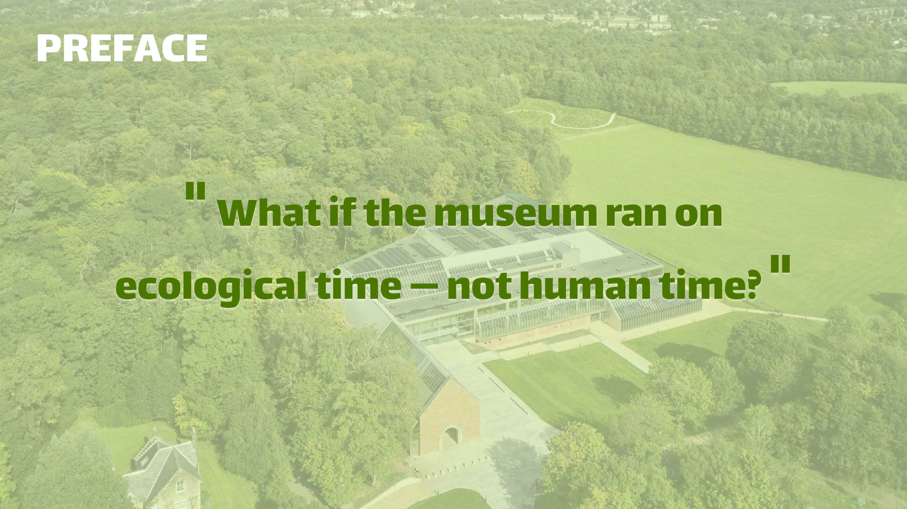
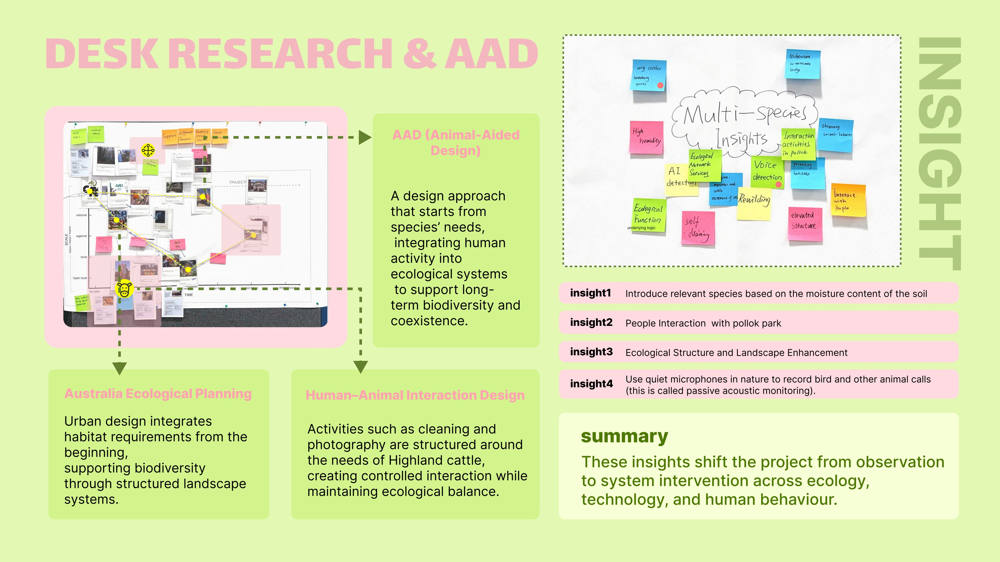
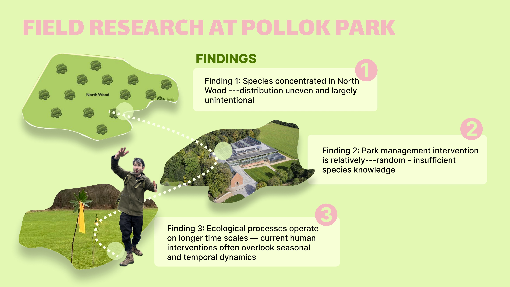
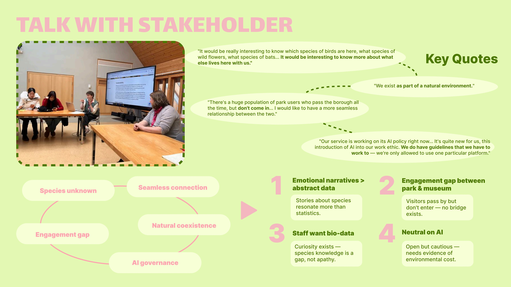
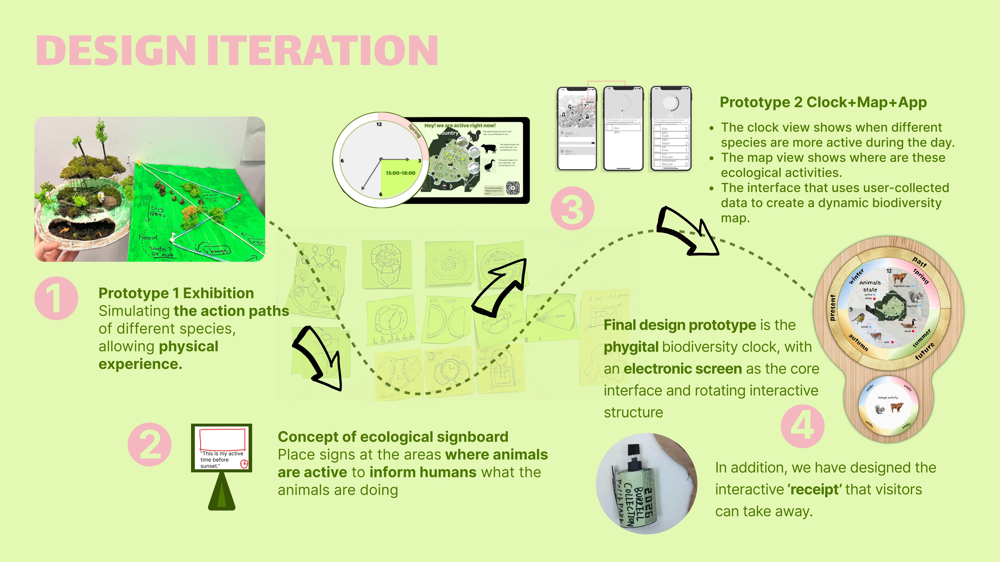
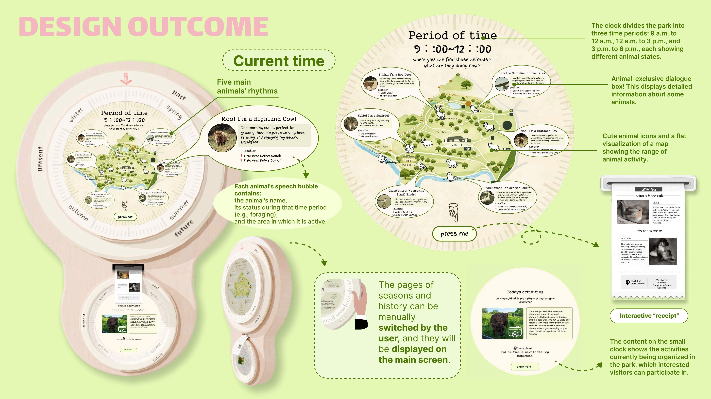
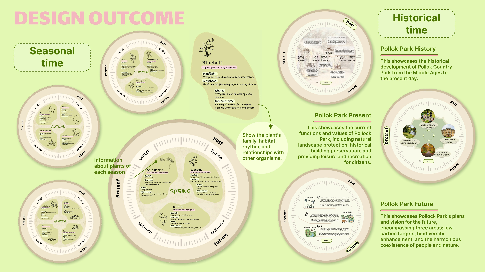
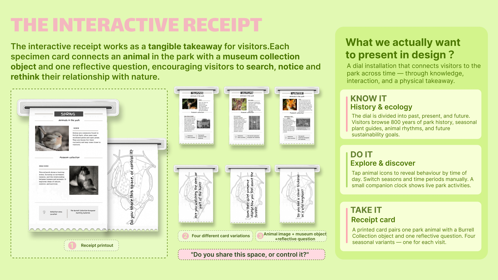
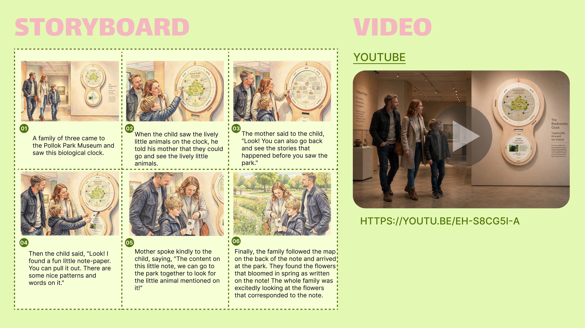

Graduate Project / Transformation Design
Multi-Species / Biodiversity Clock
What if the museum ran on ecological time, not human time?
A place-based transformation design proposal for Pollok Country Park and The Burrell Collection, translating ecological rhythms into a museum-and-park experience that invites visitors to notice, understand and participate in multi-species coexistence.
Biodiversity Clock was developed as a place-based transformation design proposal for Pollok Country Park and The Burrell Collection. Rather than creating a fictional nature experience, the project responded to a real park-museum context, field observations and stakeholder-informed research around ecological knowledge and visitor experience.

In this case study
A museum experience reframed through ecological time.
Context
A museum inside a living park system.
Pollok Park + Burrell Collection
This project began from a real place: Pollok Country Park and The Burrell Collection. Through field observation and stakeholder-informed research, the team explored how the museum and park could help visitors notice ecological rhythms that are usually invisible in a human-centred visitor experience.
Museum time
Opening hours, exhibitions, visitor comfort and cultural display shape how people encounter the site.
Species time
Seasonal rhythms, feeding patterns, migration, habitats and disturbance sensitivity shape how non-human species live in the same place.
Challenge
The design problem was not only lack of information.
Visitors could pass through Pollok Country Park without sensing the timing, needs and vulnerabilities of the species around them. The challenge was to move beyond biodiversity as static content and design an experience that makes ecological relationships feel immediate, situated and actionable.
The project therefore asked how The Burrell Collection could act less like a separate cultural container and more like a public interface for the living park around it.
My Role
Research, sense-making, prototype development and visual communication.
Research synthesis
I helped collect case studies, organise field and desk research, analyse stakeholders and translate ecological evidence into design opportunities.
Concept logic
I contributed to the shift from a broad app idea toward a time-based museum-and-park experience centred on non-human rhythms.
Visual prototyping
I supported the final communication by developing visual material and a tangible presentation model to make the concept easier to discuss.
Research Evidence
The research moved from broad biodiversity concern to situated multi-species interaction.
Start from species needs.
AAD reframed the site from a human leisure space into a shared habitat where animal life cycles, food, shelter and movement patterns become design inputs.
Species are unevenly distributed.
Observation suggested that ecological life was concentrated in specific zones such as North Wood, rather than evenly spread across the park.
Intervention needs better ecological knowledge.
Park management choices can affect species, but the public often cannot see why certain habitats, paths or seasonal protections matter.
Emotional narratives beat abstract data.
Stakeholder conversations with people connected to the park's biodiversity and visitor experience highlighted that emotional narratives, species presence and visitor motivation were more effective than abstract biodiversity facts alone.



Key Insights
The project became about changing how visitors sense the park.
Interaction matters more than species count. People need to understand relationships, not just identify animals.
Participation is fragmented. Park users and museum visitors often belong to overlapping but disconnected publics.
Ecological processes work on longer timescales than visitor attention, so the experience needed to make seasonal and historical rhythms legible.
encourage visitors to experience the park from a non-human perspective, shifting passive observation into active ecological participation?
Design Development
From information display to a phygital biodiversity clock.
Exhibition
An early public display approach that made biodiversity visible but still felt like information delivery.
Ecological signboard
A site-based direction that began connecting species presence with visitor movement and park context.
Clock + map + app
A digital system explored time, mapping and visitor action, but still needed a stronger tangible experience.
Clock + receipt
The final direction combined a public clock, rotating structure, ecological time display and collectible receipt.

Final Outcome
A clock that translates museum visiting into ecological timing.

Current time, animal rhythms and park activity
The public interface shows current ecological activity, five key animal rhythms, status cues and suggested time windows across the park day.

Different scales of ecological memory
The system connects daily activity with plant families, habitats, animal relationships and the longer history of Pollok Country Park.

A tangible takeaway from the park-museum encounter
Each receipt links a species in the park with a museum collection object and a reflective question, extending the experience beyond the screen.
User Journey
Visitors move from noticing to collecting, reflecting and changing behaviour.
Encounter
A visitor enters the museum-park threshold and sees ecological time instead of only human opening hours.
Interpret
The clock translates species activity into cues about who is active, where they may be, and what human behaviours matter.
Collect
The interactive receipt gives the visitor a physical prompt that connects park species with cultural collection objects.
Act
The visitor is invited to leave with a different sense of timing, movement and responsibility inside the shared ecological site.

Potential Impact Timeline
The proposal imagines the museum gradually becoming an ecological learning and sensing hub.
See
Visitors begin noticing disturbance, species presence and the weak connection between museum and park experience.
Understand
Eco-routing, sensor input and habitat buffer zones support clearer links between behaviour and biodiversity.
Act
Ecological cues and guidance could reduce avoidable disturbance and help visitors build more careful habits around shared habitats.
Adapt
Low-impact visiting habits become more normal as human behaviour aligns more closely with species rhythms.
Co-exist
The site could move toward more balanced coexistence, where visitor behaviour is shaped by seasonal ecological rhythms and lighter-touch intervention.
Reflection
Designing for species does not mean designing humans out.
Physical over default screen logic
The project moved away from a purely app-based system because ecological participation needed a more tangible, situated and collectible form.
Protection versus coexistence
The project keeps a productive tension open: biodiversity may benefit from reduced human presence, but design can make necessary human presence more aware and less harmful.
From data to behaviour
The strongest opportunity was not simply displaying species data, but helping people feel how their timing, route and attention affect a shared ecological system.
Competencies for service and transformation design roles
Systems thinking
Reframing a museum and park as one socio-ecological service system with human and non-human stakeholders.
Research translation
Turning desk research, field observation and stakeholder insight into experience principles and design decisions.
Future prototyping
Using speculative but grounded objects, receipts, journeys and timelines to communicate a possible public service.
Critical technology framing
Keeping AI and sensing as careful support tools rather than presenting technology as a simple solution to ecological complexity.